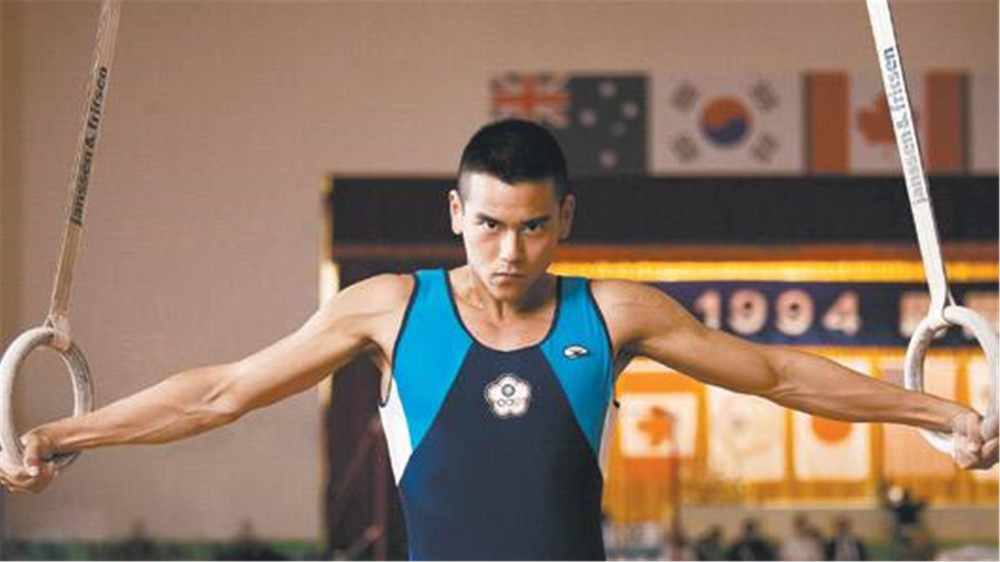
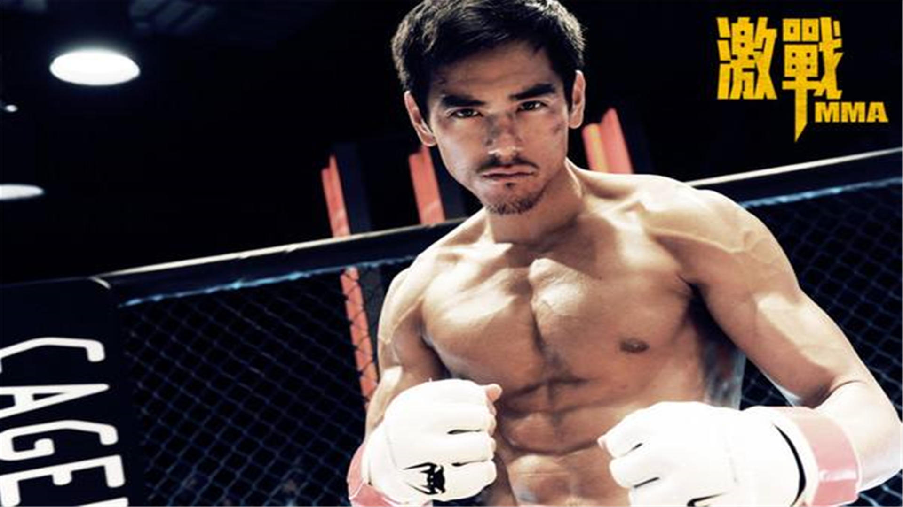

彭于晏
彭于晏，1982年3月24日出生于台湾澎湖，中国台湾影视男演员、歌手。同时担任野生救援公益大使。
重要事件
- 2002年，受邀演出偶像剧《爱情白皮书》。
-
2003年，首次担当男一号，与韩国演员秋瓷炫共谱了一段前世缘灭、今生续缘的浪漫爱情故事《恋香》。
-
2004年，出演《仙剑奇侠传》中痴情的唐钰一角，得到了许多观众的喜爱。
-
2005年，在偶像剧《海豚爱上猫》中，彭于晏一反《爱情白皮书》中的顽皮男生模样，首次尝试扮演有自闭倾向的年轻人。
-
2006年，与上海唐人电影制作有限公司合作第二部内地古装偶像剧《少年杨家将》。
-
2007年，凭借电影《基因决定我爱你》与汤唯等人一起入围第44届台湾电影金马奖最佳新演员，并为金马短片单元制作片头，完成导演处女作。同年，拍摄钮承泽执导的电视剧《我在垦丁天气晴》。
-
2010年，合约纠纷胜诉。之后发行了首张个人EP《非爱不可》。同年，电影《近在咫尺的爱恋》亮相上海国际电影节，彭于晏在片中饰演一名拳击手。
-
2011年，与Angelababy首度合作，共同演绎了一段美丽海岛上所经历的不可思议的奇妙缘分《夏日乐悠悠》。2011年，《翻滚吧！阿信》在中国内地上映，彭于晏在本片中化身专业体操选手。
-
2012年，《LOVE》、《太极》、《寒战》相继在中国内地上映，让人们看到了他除了出演爱情电影乖乖牌之外的其他侧面。2013年，中韩合拍的爱情电影《分手合约》在中国和韩国上映。
-
2014年，彭于晏迎来了首个个人“作品季”。其主演的电影《黄飞鸿之英雄有梦》成为继李连杰、赵文卓之后新一代黄飞鸿演出者。
-
2015年，他主演的由林超贤执导的青春热血动作大片《破风》相继在中国内地、香港、台湾以及东南亚等各国上映。
-
2017年，彭于晏主演韩寒导演的电影《乘风破浪》。与邓超、赵丽颖合作。
- 2018年，彭于晏主演姜文导演的《邪不压正》在全国上映。
-
2019年，参演由许鞍华执导的电影《第一炉香》.
成就和荣誉
香港电影金像奖
- 2015 第34届香港电影金像奖最佳男主角奖 黄飞鸿之英雄有梦 （提名）
- 2014 第33届香港电影金像奖最佳男配角奖 激战 （提名）
台湾电影金马奖
- 2013 第50届台湾电影金马奖最佳男配角奖 激战 （提名）
- 2011 第48届台湾电影金马奖最佳男主角奖 翻滚吧！阿信 （提名）
- 2007 第44届台湾电影金马奖最佳新人奖 基因决定我爱你 （提名）
大众电影百花奖
- 2014 第32届大众电影百花奖最佳新演员奖 寒战 （提名）
主要作品
| 年份 |
作品 |
| 2019 |
第一炉香剧 |
| 2019 |
紧急救援 |
| 2019 |
热带往事 |
| 2018 |
邪不压正 |
| 2018 |
深夜食堂 |
| 2017 |
悟空传 |
| 2017 |
明月几时有 |
| 2017 |
乘风破浪 |
| 2016 |
长城 |
| 2016 |
湄公河行动 |
| 2016 |
危城 |
| 2016 |
寒战2 |
| 2016 |
近在咫尺的爱恋 |
| 2016 |
我的特工爷爷 |
| 2016 |
奔爱 |
| 2015 |
剩者为王 |
| 2015 |
破风 |
| 2015 |
听说 |
| 2015 |
十二金鸭 |
| 2014 |
匆匆那年 |
| 2014 |
黄飞鸿之英雄有梦 |
| 2013 |
激战 |
| 2013 |
分手合约 |
| 2012 |
寒战 |
| 2012 |
太极2：英雄崛起 |
| 2012 |
太极1：从零开始 |
| 2012 |
LOVE |
| 2011 |
翻滚吧！阿信 |
| 2011 |
夏日乐悠悠 |
| 2010 |
恋人絮语 |
| 2010 |
超级大坏蛋 |
| 2008 |
女人不坏 |
| 2008 |
爱的发声练习 |
| 2008 |
公主在台北彻夜未眠 |
| 2007 |
基因决定我爱你 |
| 2007 |
六号出口 |
| 2007 |
泥巴色的纯白 |
| 2006 |
午夜照相馆 |
| 2005 |
记录 |
生活照


生平
彭于晏出生于单亲家庭，自小父母离异，13岁随家人移民加拿大。他并不喜欢读书，却考上了温哥华最好的大学，读商科。
他说，其实我一直知道，前途与爱好是两回事。他爱漫画，爱篮球，但在看不到前途的时候，他从不执著。
如今工作忙碌的彭于晏总是不忘享受和家人相处的时间，拍摄间隙都会带著妈妈出去旅游，每次度假之后，彭于晏念叨的不仅是当地的风情，还有念念不忘的亲情。
在银幕上光彩夺目，一个人的时候，彭于晏还是喜欢简单而具质感的生活。
2002年暑假外婆过世，彭于晏为奔丧回到台湾。